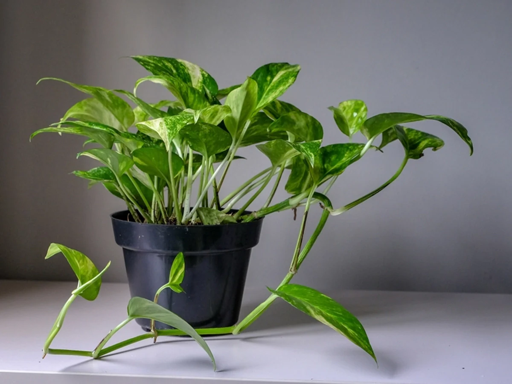

Plant Doctor 🪴
Home |
Plants |
Tips |
About |
Contact
🍀Welcome to plants page!
Aloe Vera Plant

Aloe Vera is a medicinal plant widely used for skin care and healing.
It is easy to grow and needs very little maintenance.
🌱 Care Details
Water: Once a week (do not overwater)
Sunlight: Bright, indirect sunlight
Soil: Well-drained sandy soil
Temperature: 15°C - 30°C
🩺 Common Problems & Solutions
- Yellow leaves → Too much water
- Brown tips → Too much sunlight
- Soft leaves → Root rot (overwatering)
- No growth → Lack of sunlight
🌟 Benefits
- Good for skin and hair
- Helps heal burns and cuts
- Used in medicine and cosmetics
💡 Tips
- Do not water daily
- Keep in bright place
- Use pot with drainage holes
Snake Plant

Snake Plant is a very easy-to-grow indoor plant.
It is perfect for beginners because it needs very little care
and can survive in low light conditions.
🌱 Care Details
Water: Once every 10–12 days
Sunlight: Low to bright indirect light
Soil: Well-drained soil
Temperature: 10°C - 30°C
🩺 Common Problems & Solutions
- Yellow leaves → Overwatering
- Soft or mushy leaves → Root rot
- No growth → Needs more light
- Brown edges → Too much direct sunlight
🌟 Benefits
- Improves indoor air quality
- Produces oxygen at night
- Low maintenance plant
💡 Tips
- Do not water frequently
- Keep in indirect sunlight
- Use pot with drainage holes
Money Plant

Money Plant is a popular indoor plant known for its beauty and easy care.
It is believed to bring positivity and good luck.
🌱 Care Details
Water: 2-3 times a week
Sunlight: Low to medium indirect light
Soil: Well-drained soil or water
Temperature: 15°C - 30°C
🩺 Common Problems & Solutions
- Yellow leaves → Too much water
- Dry leaves → Lack of water
- Slow growth → Not enough sunlight
- Leaves falling → Sudden temperature change
🌟 Benefits
- Improves air quality
- Easy to grow indoors
- Adds beauty to home
💡 Tips
- Can grow in water or soil
- Trim regularly for better growth
- Keep away from direct sunlight
Tulasi Plant

Tulsi, also known as Holy Basil, is a sacred and medicinal plant in India.
It is widely used in Ayurveda and helps improve health and immunity.
🌱 Care Details
Water: Light watering daily
Sunlight: Full sunlight
Soil: Well-drained soil
Temperature: 20°C - 35°C
🩺 Common Problems & Solutions
- Yellow leaves → Overwatering
- Dry leaves → Not enough water
- Slow growth → Lack of sunlight
- Leaves falling → Weather change or stress
🌟 Benefits
- Boosts immunity
- Used in medicine and herbal tea
- Purifies air
💡 Tips
- Keep in open sunlight area
- Water regularly but avoid excess
- Trim leaves to promote growth
Adulsa Plant

Adulsa, also known as Adhatoda, is a medicinal plant commonly used in Ayurveda.
It is very useful for treating cough, cold, and respiratory problems.
🌱 Care Details
Water: Moderate watering (2–3 times a week)
Sunlight: Full to partial sunlight
Soil: Well-drained soil
Temperature: 20°C - 35°C
🩺 Common Problems & Solutions
- Yellow leaves → Overwatering
- Dry leaves → Lack of water
- Slow growth → Poor soil or less sunlight
- Leaf spots → Fungal infection
🌟 Benefits
- Helps treat cough and cold
- Used in herbal medicine
- Good for respiratory health
💡 Tips
- Grow in open sunlight for better growth
- Water regularly but do not overwater
- Use organic fertilizer
Quick Links
Home |
Plants |
Tips |
About |
Contact
☎️ Contact Us
📍 Plant Doctor,Maharashtra,India
📧 saihole2010@gmail.com
📱 9975402726
© 2026 Plant Doctor | Made by https://github.com/voyager2010